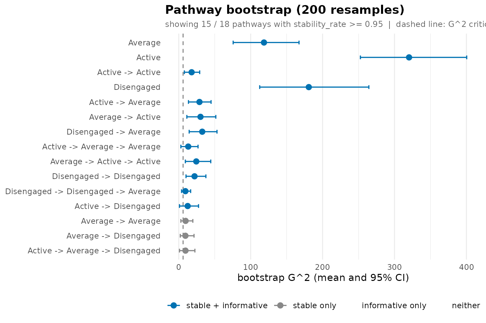
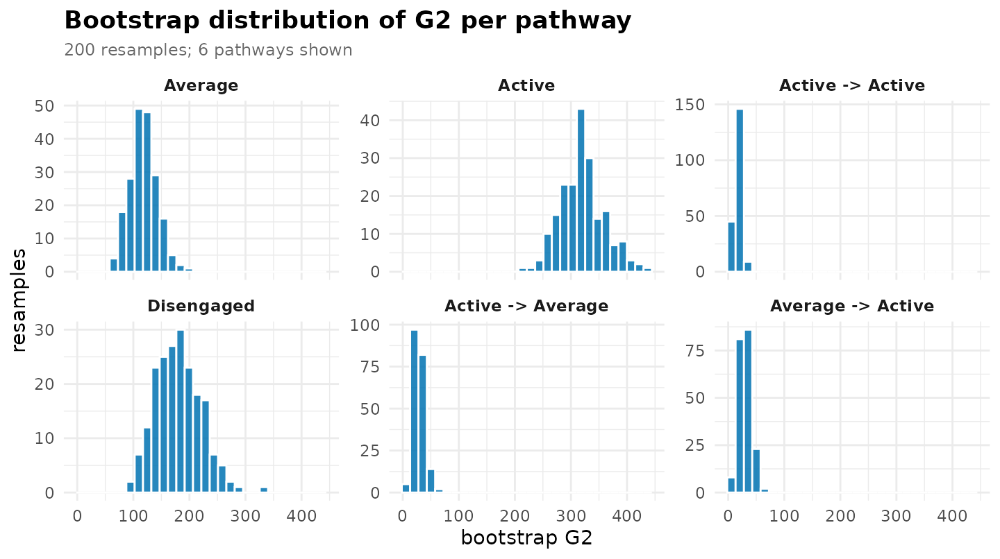
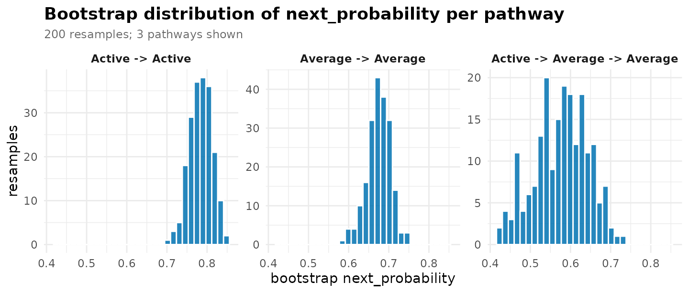

Pathway reliability with the bootstrap
Written by Mohammed Saqr and Sonsoles López-Pernas
Source:vignettes/articles/pathway-reliability.Rmd
pathway-reliability.RmdA transition tree is estimated from one sample of sequences. Every pathway it reports, such as “after two active steps a learner stays active with probability 0.79”, is a statistic of that sample, and a different sample from the same population would give a somewhat different count, a different next-state distribution and, for pathways near the pruning threshold, a different decision about whether the pathway exists at all. Variable-order models are especially exposed to this. A context of depth three is observed far less often than a context of depth one, and the deeper a pathway, the fewer sequences carry it (Ron, Singer and Tishby, 1996; Bühlmann and Wyner, 1999). A pathway that a handful of sequences produce can look sharp and distinctive in the fitted tree and still be an accident of who happened to be sampled.
bootstrap_pathways() measures this sampling variability
with a non-parametric bootstrap at the level of the sequence. Each
resample draws whole sequences with replacement, so the dependence
between the steps of a sequence is kept, recounts every pathway of the
fitted tree, and records its statistics. The approach extends the
edge-level bootstrap of transition network analysis (Saqr et al., 2025)
from single transitions to pathways of variable depth. Two questions are
asked of every pathway. Stability asks whether the
pathway’s value reproduces: the share of resamples in which the chosen
statistic stays within a band around its observed value.
Informativeness asks whether the pathway reproducibly
changes the prediction: the share of resamples in which its
likelihood-ratio statistic against its shorter parent context exceeds
the chi-square critical value, the same test that
prune_tree(criterion = "G2") applies once to the observed
data.
Data
trajectories holds the engagement states of 138 learners
over 15 time steps.
- Sequence: one row per learner.
-
Time: columns
1to15, one per time step; trailingNAs mark the end of a shorter trajectory. -
State:
Active,AverageorDisengaged, the learner’s engagement at that step.
library(transitiontrees)
dim(trajectories)
#> [1] 138 15The tree to resample
To fit the tree, we call context_tree() with
max_depth for the longest history considered and
min_count for the minimum number of observations a context
needs to enter the tree. To keep only the contexts whose prediction
differs from their parent’s, we call prune_tree(), which by
default applies a likelihood-ratio
()
test at
.
tree <- context_tree(trajectories, max_depth = 3L, min_count = 5L)
pruned <- prune_tree(tree)
pruned
#> <transitiontrees> 18 nodes, depth <= 3, 3 states [pruned]
#> alphabet : Active, Average, Disengaged
#> fit on : 136 sequences, 1870 observations
#> smoothing: floor(ymin=0.001, rule=interpolate) min_count = 5
#> pruned by: G2 alpha = 0.05
#> (start) n=1870 -> Average (0.43)
#> |-- Active n=658 -> Active (0.70)
#> | |-- Active n=433 -> Active (0.79)
#> | | `-- Average n=70 -> Active (0.53)
#> | `-- Average n=144 -> Active (0.50)
#> | `-- Disengaged n=12 -> Average (0.83)
#> |-- Average n=751 -> Average (0.61)
#> | |-- Active n=160 -> Average (0.52)
#> | | `-- Disengaged n=10 -> Average (0.50)
#> | |-- Average n=419 -> Average (0.68)
#> | | `-- Active n=80 -> Average (0.57)
#> | `-- Disengaged n=122 -> Average (0.52)
#> | `-- Disengaged n=31 -> Average (0.71)
#> `-- Disengaged n=325 -> Disengaged (0.48)
#> |-- Active n=23 -> Active (0.39)
#> |-- Average n=134 -> Average (0.50)
#> | `-- Active n=17 -> Active (0.41)
#> `-- Disengaged n=139 -> Disengaged (0.68)The pruned tree keeps 18 of the 38 grown contexts: the root, three contexts of depth one, eight of depth two and six of depth three. Two of the 138 learners have no recorded state, so the tree is fitted on 136 sequences and 1,870 observations.
Running the bootstrap
To bootstrap the pathways, we call bootstrap_pathways()
with iter for the number of resamples and seed
for a reproducible draw. By default stability is measured on the
pathway’s count (stat = "count") within the band
consistency_range = c(0.5, 1.5) times the observed value, a
pathway is stable when fewer than 5% of resamples fall
outside the band (stability_threshold = 0.95), and it is
informative when its
exceeds the critical value in at least 80% of resamples
(informative_threshold = 0.80). Two hundred resamples are
used here so that the guide builds quickly; a reported analysis should
use the default of 1,000.
boot <- bootstrap_pathways(pruned, iter = 200L, seed = 1L)
boot
#> <transitiontrees_bootstrap> 200 resamples
#> stability : count in [0.50, 1.50] x observed, p < 0.05
#> informative: G^2 > qchisq(0.95, df=k-1) = 5.99, threshold 0.80
#> pathways : 18 total, 16 stable, 12 informative, 12 both
#>
#> top pathways (stable + informative first):
#> pathway depth count p_stability stability_rate stable informative_rate
#> Average 1 751 0.005 1.00 TRUE 1.000
#> Active 1 658 0.005 1.00 TRUE 1.000
#> Active -> Active 2 433 0.005 1.00 TRUE 0.990
#> Disengaged 1 325 0.005 1.00 TRUE 1.000
#> Active -> Average 2 160 0.005 1.00 TRUE 1.000
#> Average -> Active 2 144 0.005 1.00 TRUE 1.000
#> Disengaged -> Average 2 122 0.005 1.00 TRUE 1.000
#> Active -> Average -> Average 3 80 0.005 1.00 TRUE 0.875
#> Average -> Active -> Active 3 70 0.005 1.00 TRUE 0.990
#> Disengaged -> Disengaged 2 139 0.015 0.99 TRUE 0.995
#> informative mean_G2 ci_G2_lo ci_G2_hi
#> TRUE 118.5 75.64 167.2
#> TRUE 320.2 252.54 400.4
#> TRUE 17.9 7.76 29.1
#> TRUE 180.8 112.55 264.3
#> TRUE 28.8 13.51 44.9
#> TRUE 30.2 11.25 51.5
#> TRUE 32.6 14.49 53.2
#> TRUE 13.2 2.92 26.8
#> TRUE 24.3 9.17 44.5
#> TRUE 21.9 10.08 37.7
#> # ... 8 more pathways (use summary(x) for full table)The header states the rules. With three states the
test against the parent has two degrees of freedom, so its critical
value is 5.99. Of the 18 pathways, 16 are stable, 12 are informative and
all 12 informative pathways are also stable. The table lists the
trustworthy pathways first. The three depth-one contexts and the
depth-two pathways Active -> Active,
Active -> Average, Average -> Active and
Disengaged -> Average clear the critical value in every
resample or nearly every one.
The full summary table
To obtain one row per pathway with every bootstrap statistic, we call
as.data.frame() with what = "summary" (the
default; summary(boot) returns the same table). The table
has 30 columns: the observed statistics, the stability and
informativeness measures, and the bootstrap mean, standard deviation and
percentile interval of the count, the probability of the most likely
next state, the divergence from the parent and
.
reliability <- as.data.frame(boot, what = "summary")
dim(reliability)
#> [1] 18 30
names(reliability)
#> [1] "pathway" "depth" "count"
#> [4] "likely_next" "next_probability" "divergence"
#> [7] "changes_prediction" "G2" "p_stability"
#> [10] "stability_rate" "stable" "informative_rate"
#> [13] "informative" "flip_consistency" "mean_count"
#> [16] "sd_count" "ci_count_lo" "ci_count_hi"
#> [19] "mean_next_probability" "sd_next_probability" "ci_next_probability_lo"
#> [22] "ci_next_probability_hi" "mean_divergence" "sd_divergence"
#> [25] "ci_divergence_lo" "ci_divergence_hi" "mean_G2"
#> [28] "sd_G2" "ci_G2_lo" "ci_G2_hi"The definitions of the measures are:
-
p_stability: the proportion of resamples, with a +1 correction, in which the statistic falls outside the band;stableisTRUEwhen it is below1 - stability_threshold. With 200 resamples its smallest possible value is 1/201 = 0.005. -
stability_rate: the uncorrected proportion of resamples inside the band. A pathway that is absent from a resample has a count of zero there and falls outside the band. -
informative_rate: the proportion of resamples in which , with the counts of the next states after the pathway and the empirical distribution of its parent context, exceeds the critical value . -
flip_consistency: the proportion of resamples that reproduce whether the pathway’s most likely next state differs from its parent’s. -
divergence: the Kullback-Leibler divergence, in bits, of the pathway’s next-state distribution from its parent’s.
All statistics are computed from raw counts: no smoothing and no
min_count filter are applied inside the resampling
loop.
Confidence intervals for pathway statistics
To report each pathway’s observed
with its 95% bootstrap interval, we call subset() on the
summary table with select for the columns.
subset(reliability, select = c(pathway, depth, count, G2, ci_G2_lo,
ci_G2_hi, informative_rate))
#> pathway depth count G2 ci_G2_lo ci_G2_hi informative_rate
#> 1 Average 1 751 118.23 75.640 167.2 1.000
#> 2 Active 1 658 318.80 252.539 400.4 1.000
#> 3 Active -> Active 2 433 17.17 7.760 29.1 0.990
#> 4 Disengaged 1 325 181.60 112.545 264.3 1.000
#> 5 Active -> Average 2 160 27.24 13.505 44.9 1.000
#> 6 Average -> Active 2 144 29.40 11.246 51.5 1.000
#> 7 Disengaged -> Average 2 122 29.80 14.488 53.2 1.000
#> 8 Active -> Average -> Average 3 80 11.30 2.924 26.8 0.875
#> 9 Average -> Active -> Active 3 70 22.61 9.173 44.5 0.990
#> 10 Disengaged -> Disengaged 2 139 21.15 10.081 37.7 0.995
#> 11 Disengaged -> Disengaged -> Average 3 31 8.90 3.884 16.5 0.885
#> 12 Active -> Disengaged 2 23 11.09 0.981 27.5 0.830
#> 13 (start) 0 1870 NA NA NA NA
#> 14 Average -> Average 2 419 8.52 2.915 19.6 0.760
#> 15 Average -> Disengaged 2 134 8.57 2.143 21.2 0.710
#> 16 Active -> Average -> Disengaged 3 17 7.38 0.991 22.4 0.670
#> 17 Disengaged -> Average -> Active 3 12 6.67 1.047 18.6 0.580
#> 18 Disengaged -> Active -> Average 3 10 7.59 1.067 22.4 0.695The interval for Active runs from 253 to 400, far above
the critical value of 5.99. The pathways that the pruning test kept with
the least margin are the deep ones.
Active -> Average -> Average has an observed
of 11.3 with an interval from 2.9 to 26.8; it clears the critical value
in 87.5% of resamples and so is informative, though with far less margin
than the depth-one pathways. The depth-three pathways
Active -> Average -> Disengaged,
Disengaged -> Average -> Active and
Disengaged -> Active -> Average, with 10 to 17
observations each, have intervals whose lower bounds lie near 1 and
clear the critical value in 58% to 70% of resamples: the pruning test
kept them on the observed sample, but they would be dropped in a large
share of resamples.
The interval on the probability of the most likely next state is the statement a reader of a pathway usually needs.
subset(reliability, depth == 2,
select = c(pathway, count, likely_next, next_probability,
ci_next_probability_lo, ci_next_probability_hi))
#> pathway count likely_next next_probability ci_next_probability_lo
#> 3 Active -> Active 433 Active 0.785 0.728
#> 5 Active -> Average 160 Average 0.519 0.455
#> 6 Average -> Active 144 Active 0.500 0.484
#> 7 Disengaged -> Average 122 Average 0.516 0.452
#> 10 Disengaged -> Disengaged 139 Disengaged 0.676 0.571
#> 12 Active -> Disengaged 23 Active 0.391 0.348
#> 14 Average -> Average 419 Average 0.678 0.611
#> 15 Average -> Disengaged 134 Average 0.500 0.425
#> ci_next_probability_hi
#> 3 0.831
#> 5 0.589
#> 6 0.581
#> 7 0.593
#> 10 0.740
#> 12 0.589
#> 14 0.729
#> 15 0.593After two active steps the probability of a third is 0.79, with a 95% interval from 0.73 to 0.83.
The four kinds of pathway
Stability and informativeness answer different questions, and a
pathway is worth interpreting when it passes both. The two flags divide
the pathways into four groups: stable and informative (a reproducible
and distinctive pathway), stable only (a reproducible pathway whose
prediction is close to its parent’s), informative only (a distinctive
pathway carried by an unstable subset of sequences), and neither. To
list the pathways that are stable but not informative, we call
subset() with a condition on the two flags.
subset(reliability, stable & !informative,
select = c(pathway, count, stability_rate, informative_rate, G2))
#> pathway count stability_rate informative_rate G2
#> 13 (start) 1870 1.00 NA NA
#> 14 Average -> Average 419 1.00 0.76 8.52
#> 15 Average -> Disengaged 134 1.00 0.71 8.57
#> 16 Active -> Average -> Disengaged 17 0.99 0.67 7.38The root, (start), has no parent, so it has no
and is never informative. Average -> Average, with 419
observations, is the clearest case: its count reproduces in every
resample, but its prediction is close enough to that of
Average that its
exceeds the critical value in 76% of resamples. Pruning kept it on the
observed sample; the bootstrap shows that the extra step of history it
adds is not reproducibly informative.
To list the pathways that fail the stability criterion, we use the
same call with !stable.
subset(reliability, !stable,
select = c(pathway, count, ci_count_lo, ci_count_hi, stability_rate))
#> pathway count ci_count_lo ci_count_hi stability_rate
#> 17 Disengaged -> Average -> Active 12 5.98 19 0.945
#> 18 Disengaged -> Active -> Average 10 5.00 17 0.940Both unstable pathways are depth-three contexts with 10 and 12 observations, and both stay inside the band in 94% of resamples, short of the 95% required. Their 95% count intervals span more than a factor of three, which is the signature of a pathway that a few learners carry.
The forest plot
To see
and its interval for every pathway at once, we call plot()
on the bootstrap result. Pathways are ordered with the stable and
informative ones first; the dashed line is the critical value. By
default only pathways whose stability_rate reaches the
stability threshold are drawn; top caps the number of
rows.
plot(boot)
A pathway whose interval lies entirely to the right of the dashed line is reproducibly informative. Intervals that cross the line belong to pathways whose informativeness depends on the sample.
Resample distributions
An interval summarizes a distribution, and a skewed or bimodal
distribution can hide behind a symmetric-looking interval. To draw the
full resample distribution of a statistic for the leading pathways, we
call plot_pathway_resamples() with stat for
the statistic and top for the number of pathways.
plot_pathway_resamples(boot, stat = "G2", top = 6L)
To draw chosen pathways, we pass their names to
pathways.
plot_pathway_resamples(boot, stat = "next_probability",
pathways = c("Active -> Active",
"Average -> Average",
"Active -> Average -> Average"))
The 95% interval of the probability of the most likely next state is
0.73 to 0.83 for Active -> Active and 0.44 to 0.69 for
Active -> Average -> Average, which has about a fifth
of the observations.
To obtain the resample values themselves, one row per resample and
pathway, we call as.data.frame() with
what = "resamples" and stat for the statistic.
A pathway absent from a resample has NA for statistics that
need at least one observation.
resamples <- as.data.frame(boot, what = "resamples", stat = "G2")
head(subset(resamples, pathway == "Average -> Average"))
#> resample pathway stat value
#> 1801 1 Average -> Average G2 8.01
#> 1802 2 Average -> Average G2 5.64
#> 1803 3 Average -> Average G2 25.41
#> 1804 4 Average -> Average G2 9.02
#> 1805 5 Average -> Average G2 6.66
#> 1806 6 Average -> Average G2 5.91
dim(resamples)
#> [1] 3600 4The table has 200 resamples times 18 pathways, 3,600 rows. It is the input for any summary of the resample distribution that the package does not compute itself.
Sensitivity to the bootstrap settings
The band, the thresholds and the seed are analytic choices, and a
reported reliability result should survive a reasonable change in each.
To measure stability on the probability of the most likely next state
instead of the count, with a narrower band, we call
bootstrap_pathways() with stat and
consistency_range.
boot_prob <- bootstrap_pathways(pruned, iter = 200L, seed = 1L,
stat = "next_probability",
consistency_range = c(0.75, 1.25))
print(boot_prob, n = 3L)
#> <transitiontrees_bootstrap> 200 resamples
#> stability : next_probability in [0.75, 1.25] x observed, p < 0.05
#> informative: G^2 > qchisq(0.95, df=k-1) = 5.99, threshold 0.80
#> pathways : 18 total, 15 stable, 12 informative, 11 both
#>
#> top pathways (stable + informative first):
#> pathway depth count p_stability stability_rate stable informative_rate informative
#> Average 1 751 0.005 1 TRUE 1.00 TRUE
#> Active 1 658 0.005 1 TRUE 1.00 TRUE
#> Active -> Active 2 433 0.005 1 TRUE 0.99 TRUE
#> mean_G2 ci_G2_lo ci_G2_hi
#> 118.5 75.64 167.2
#> 320.2 252.54 400.4
#> 17.9 7.76 29.1
#> # ... 15 more pathways (use summary(x) for full table)To check the result against a different random draw, we change
seed.
boot_seed <- bootstrap_pathways(pruned, iter = 200L, seed = 2L)
print(boot_seed, n = 3L)
#> <transitiontrees_bootstrap> 200 resamples
#> stability : count in [0.50, 1.50] x observed, p < 0.05
#> informative: G^2 > qchisq(0.95, df=k-1) = 5.99, threshold 0.80
#> pathways : 18 total, 16 stable, 12 informative, 12 both
#>
#> top pathways (stable + informative first):
#> pathway depth count p_stability stability_rate stable informative_rate informative
#> Average 1 751 0.005 1 TRUE 1.000 TRUE
#> Active 1 658 0.005 1 TRUE 1.000 TRUE
#> Active -> Active 2 433 0.005 1 TRUE 0.975 TRUE
#> mean_G2 ci_G2_lo ci_G2_hi
#> 119.3 68.77 170.9
#> 321.6 243.56 389.7
#> 17.9 6.59 31.1
#> # ... 15 more pathways (use summary(x) for full table)To demand that a pathway clear the critical value in 95% of resamples
rather than 80%, we set informative_threshold.
boot_strict <- bootstrap_pathways(pruned, iter = 200L, seed = 1L,
informative_threshold = 0.95)
print(boot_strict, n = 3L)
#> <transitiontrees_bootstrap> 200 resamples
#> stability : count in [0.50, 1.50] x observed, p < 0.05
#> informative: G^2 > qchisq(0.95, df=k-1) = 5.99, threshold 0.95
#> pathways : 18 total, 16 stable, 9 informative, 9 both
#>
#> top pathways (stable + informative first):
#> pathway depth count p_stability stability_rate stable informative_rate informative
#> Average 1 751 0.005 1 TRUE 1.00 TRUE
#> Active 1 658 0.005 1 TRUE 1.00 TRUE
#> Active -> Active 2 433 0.005 1 TRUE 0.99 TRUE
#> mean_G2 ci_G2_lo ci_G2_hi
#> 118.5 75.64 167.2
#> 320.2 252.54 400.4
#> 17.9 7.76 29.1
#> # ... 15 more pathways (use summary(x) for full table)The first run found 16 stable and 12 informative pathways. Measuring
stability on the next-state probability with the narrower band leaves 15
stable pathways and 11 that are both:
Active -> Disengaged (23 observations) loses its
stability, and Active -> Average -> Disengaged
replaces Disengaged -> Average -> Active among the
unstable ones. A second seed reproduces the same 16 stable and 12
informative pathways. The stricter informativeness threshold of 0.95
keeps 9 of the 12. A conclusion about a specific pathway should be
reported only if it holds under all of these settings.
Resampling the unpruned tree
Pruning and the bootstrap answer related questions, and the bootstrap can be run on the unpruned tree to see which of the grown contexts it would support.
boot_full <- bootstrap_pathways(tree, iter = 200L, seed = 1L)
print(boot_full, n = 5L)
#> <transitiontrees_bootstrap> 200 resamples
#> stability : count in [0.50, 1.50] x observed, p < 0.05
#> informative: G^2 > qchisq(0.95, df=k-1) = 5.99, threshold 0.80
#> pathways : 38 total, 30 stable, 12 informative, 12 both
#>
#> top pathways (stable + informative first):
#> pathway depth count p_stability stability_rate stable informative_rate informative
#> Average 1 751 0.005 1 TRUE 1.00 TRUE
#> Active 1 658 0.005 1 TRUE 1.00 TRUE
#> Active -> Active 2 433 0.005 1 TRUE 0.99 TRUE
#> Disengaged 1 325 0.005 1 TRUE 1.00 TRUE
#> Active -> Average 2 160 0.005 1 TRUE 1.00 TRUE
#> mean_G2 ci_G2_lo ci_G2_hi
#> 118.5 75.64 167.2
#> 320.2 252.54 400.4
#> 17.9 7.76 29.1
#> 180.8 112.55 264.3
#> 28.8 13.51 44.9
#> # ... 33 more pathways (use summary(x) for full table)Of the 38 grown contexts, 30 are stable and 12 are reproducibly
informative, and the 12 are the same pathways that were informative in
the pruned tree. The single
test of prune_tree() kept 17 contexts below the root; the
bootstrap supports 12 of them and adds what the single test cannot: the
share of resamples in which each decision would have been made.
Summary
| Question | Call |
|---|---|
| Does each pathway reproduce and change the prediction? | bootstrap_pathways(tree, iter = 1000L, seed = 1L) |
| The full table of bootstrap statistics |
as.data.frame(boot, what = "summary") or
summary(boot)
|
| Confidence intervals for one statistic | subset(as.data.frame(boot), select = c(pathway, ci_G2_lo, ci_G2_hi)) |
| Pathways in one reliability group | subset(as.data.frame(boot), stable & !informative) |
| Every resample value | as.data.frame(boot, what = "resamples", stat = "G2") |
| intervals for all pathways | plot(boot) |
| The resample distribution of a statistic | plot_pathway_resamples(boot, stat = "G2") |
Smoothing and the pruning test are covered in Smoothing and pruning, and the comparison of pathways between groups in Comparing groups.
References
Bühlmann, P., & Wyner, A. J. (1999). Variable length Markov chains. The Annals of Statistics, 27(2), 480-513. https://doi.org/10.1214/aos/1018031204
Ron, D., Singer, Y., & Tishby, N. (1996). The power of amnesia: Learning probabilistic automata with variable memory length. Machine Learning, 25(2-3), 117-149. https://doi.org/10.1023/A:1026490906255
Saqr, M., López-Pernas, S., Törmänen, T., Kaliisa, R., Misiejuk, K., & Tikka, S. (2025). Transition network analysis: A novel framework for modeling, visualizing, and identifying the temporal patterns of learners and learning processes. In Proceedings of the 15th International Learning Analytics and Knowledge Conference (LAK ’25) (pp. 351-361). https://doi.org/10.1145/3706468.3706513